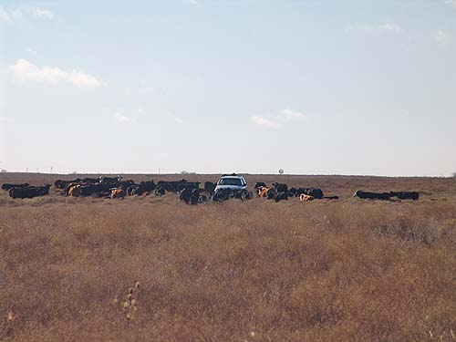
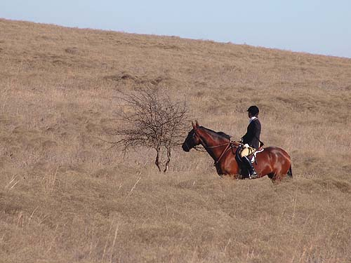

The terrain is different from what
we're used to hunting. Down in the basins you only see the ridge lines,
and on top of the ridges you can see great distances.

The problem with car following. The
cows think it's feeding time.
Gabrielle on a ridge, watching the
hounds work a coyote scent.
Following the lead hounds.
The field strung out behind.
They were heading toward the East,
and Aver, but lost the scent before going off property.
Chris and Mary Ann guarded the South
side of the property. They didn't see much hound work, but dealt with cows
and Jack Rabbits.
Jake and Melanie off in the distance.
Cresting the ridge and looking for
more scent.
Gabrielle and her mare moving on.
On the scent of a viewed fox.
Laura keeping Chrissie in sight.
The grass was tall and the horses
were careful.
Cantering on to stay with Chrissie.
It's difficult to gauge distance here.
The next ridge is farther away than it appears.

Gabrielle and her mare watching for
hounds.
All hounds on after a good run.
A rainbow of horses.
Oil wells are a common sight around
here.
A sea of tails.
Melanie and Jake trotting up to help
road in the hounds.